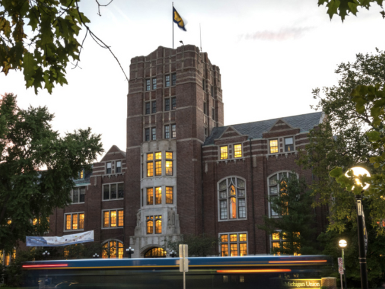

University Health Service
University Health & Counseling (UHC) supports the health and well-being of the campus community through a public health-informed approach that emphasizes prevention, education, and treatment. We are inspired to help students realize their potential, cope with the stresses of life, work productively, and connect meaningfully with others.
We provide integrated, evidence-based, and comprehensive clinical care. Here are some key points to know about getting care at UHS.
- Appointments are required Schedule through your patient portal or by calling 734-764-8320.
- Nurse advice by phone is available day or night.
- Video visits are available for select services.
Emergency / After-Hours Care
If you have a medical emergency:
CALL 911 or go directly to the nearest hospital emergency department. The nearest hospital emergency department to the U-M Ann Arbor campus is Michigan Medicine, located on the medical campus:
- If you are age 21 or older, use the U-M Hospital Emergency Department located at 1500 E. Medical Center Drive in Ann Arbor, phone 734-936-6666.
- If you are under age 21, use the Children's Emergency Services at Mott Children's Hospital, located at 1540 East Hospital Drive, Floor 2 in Ann Arbor.
If you have a minor injury or illness (urgent):
When UHS is open, call 734-764-8320, explain your situation and ask for Nurse Advice. UHS can evaluate and treat minor illnesses and injuries, including some broken bones. Students who live in Michigan Housing can request a ride to/from UHS from Housing Security by calling 734-763-1131.
When UHS is closed, you may want to:
- Call UHS for Nurse Advice at 734-764-8320, day or night
- Visit the CVS Minute Clinic on State Street - see Hours and Services or another urgent care clinic in Ann Arbor. See Urgent Care Clinics courtesy of Ann Arbor Observer City Guide (provision of this information is not an endorsement of these facilities)
- Call 911 or go directly to the nearest Hospital Emergency Department
Make an Appointment
Appointments are required for clinician visits. In-person and telehealth (phone and video) appointments are available. To make an appointment, do one of the following:
- Self-schedule or send a request through your patient portal (available for select services--some clinics that require referrals are not available for self-scheduling)
- If you do not see an appointment that fits your needs, please call UHS at 734-764-8320
- You may also send a request via email to uhs-apptschd@med.umich.edu
Counseling and Psychological Services

We are happy to offer both in-person and virtual services. CAPS is committed to creating an environment based on our values of multicultural, multi-disciplinary and multi-theoretical practices that allow our diverse student body to access care, receive high quality services and take positive pathways to mental health.
Our Front Desk (Michigan Union 4th Floor) is open and ready to help support you -- staff members are available throughout the day to assist you with your needs to answer questions, and get you to the right place. We can be reached by phone at: (734) 764-8312.
